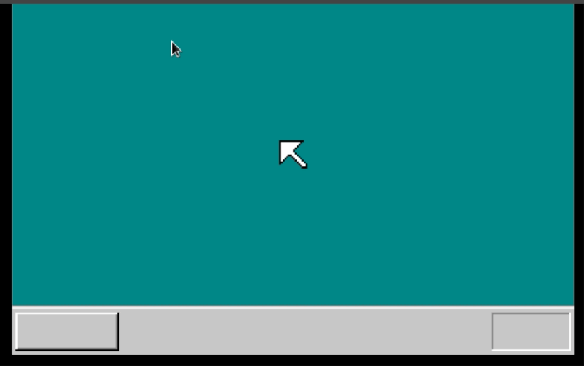
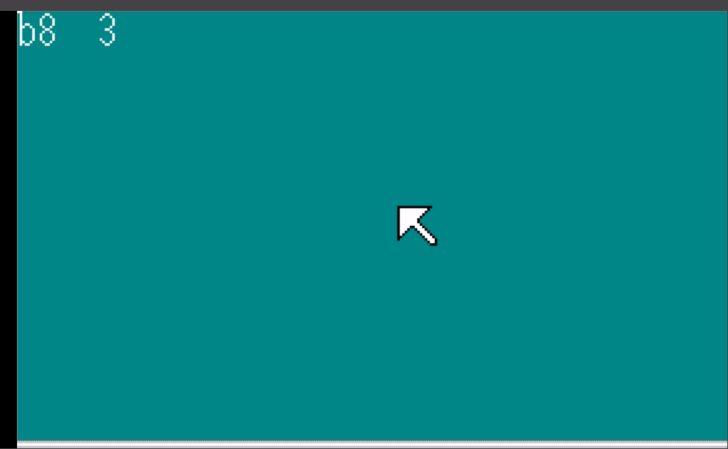

「30日でできる！OS自作入門」をRustで。7日目
「30日でできる！OS自作入門 」のC言語の部分をできるだけRustですすめてみる。今回は7日目の内容。
linker scriptのバグの修正
前回の記事で、lazy_staticが使えないことに触れた。いろいろと調べた結果、kernel.ldにバグがあったことがわかった。
/* 省略 */
/*.dataセクションのメモリ開始位置*/
.data 0x00000400:
/*.data :*/
/*.dataセクションのファイル上の開始位置*/
AT(LOADADDR(.text) + SIZEOF(.text)) SUBALIGN(4)
{
*(.data*) /* ←ここを .data から .data* にした */
*(.rodata*)
}
/* 省略 */lazy_staticが使えない以外にも、普通にstaticを使って.dataセクションが使われるようにするとうまく初期化されていない感じになっていたりしたが、すべてここが原因だった。
以下、本の内容に戻る。
FIFO構造の追加
本の内容の冒頭はとばし、FIFOキューをつくるところから開始する。
fifo.rs という別ファイルを追加し、本に従って、以下のようにFIFOキューをつくる。
// fifo.rs
use core::cell::{Cell, RefCell};
pub struct Fifo {
pub buf: RefCell<[u8; 128]>,
pub p: Cell<u32>,
pub q: Cell<u32>,
pub free: Cell<u32>,
pub flags: Cell<u32>,
pub size: u32,
}
const FLAGS_OVERRUN: u32 = 0x0001;
impl Fifo {
pub fn new(size: u32) -> Fifo {
Fifo {
p: Cell::new(0),
q: Cell::new(0),
free: Cell::new(size),
flags: Cell::new(0),
size: size,
buf: RefCell::new([0; 128]),
}
}
pub fn put(&self, data: u8) -> Result<(), &'static str> {
if self.free.get() == 0 {
self.flags.set(self.flags.get() | FLAGS_OVERRUN);
return Err("FLAGS_OVERRUN ERROR");
}
{
let mut buf = self.buf.borrow_mut();
buf[self.p.get() as usize] = data;
}
self.p.set(self.p.get() + 1);
if self.p.get() == self.size {
self.p.set(0);
}
self.free.set(self.free.get() - 1);
return Ok(());
}
pub fn get(&self) -> Result<u8, &'static str> {
if self.free.get() == self.size {
return Err("NO DATA");
}
let data = self.buf.borrow()[self.q.get() as usize];
self.q.set(self.q.get() + 1);
if self.q.get() == self.size {
self.q.set(0);
}
self.free.set(self.free.get() + 1);
Ok(data)
}
pub fn status(&self) -> u32 {
self.size - self.free.get()
}
}あとで static として使いたいので、 Cell, RefCell を使って内部変更ができるようにしておく。size だけは初期化時に決まるので、変更する必要がない。
また、実際にバッファを保持するbufは128バイトを固定で確保し、その中のsizeの分だけを使うようにしている。const generics を使えばこの辺りも柔軟に書けるが、まだnightlyでも部分的にしか実装がされていないようだったので、今回は避けた。
get, put などエラーを返す可能性があるものはRustらしくResultを返すようにした。
キーボード入力の検知
上記のFIFOキューを使って、キーボード入力時に画面にキーコードを表示できるようにする。
まず、冒頭で紹介したとおり、 lazy_static が使用できるようになったので、lazy_static でキーボード入力用のFIFOキューを初期化する
// interrupt.rs
use lazy_static::lazy_static;
use spin::Mutex;
lazy_static! {
pub static ref KEYBUF: Mutex<Fifo> = Mutex::new(Fifo::new(32));
}前回作成した inthandler21 を変更し、 KEYBUF に入力されたキーを詰めていくだけの関数にする。
// interrupt.rs
const PORT_KEYDAT: u32 = 0x60;
pub extern "C" fn inthandler21() {
out8(PIC0_OCW2, 0x61); // IRQ-01 受付終了
let key = in8(PORT_KEYDAT);
KEYBUF.lock().put(key).unwrap();
}最後に、lib.rsのループで、 KEYBUF にデータが詰まっていたら画面に表示されるようにする。
// lib.rs
#[no_mangle]
#[start]
pub extern "C" fn haribote_os() {
use asm::{cli, sti, stihlt};
use interrupt::KEYBUF;
use vga::{Color, Screen, ScreenWriter};
use core::fmt::Write;
descriptor_table::init();
interrupt::init();
sti();
interrupt::allow_input();
let mut screen = Screen::new();
screen.init();
loop {
cli();
if KEYBUF.lock().status() == 0 {
stihlt();
} else {
let key = KEYBUF.lock().get().unwrap();
sti();
(Screen::new()).boxfill8(Color::DarkCyan, 0, 0, 16, 16);
let mut writer = ScreenWriter::new(Screen::new(), vga::Color::White, 0, 0);
write!(writer, "{:x}", key).unwrap();
}
}
}キーボード入力実行結果
以下のようにキーボードの入力に追随して表示文字が切り替わるようになった。

マウスの入力検知
次にマウスの入力も検知できるようにする。
マウスの入力を検知するにはキーボード制御装置の初期化処理が必要になる。
//interrupt.rs
fn wait_kbc_sendready() {
// キーボードコントローラがデータ送信可能になるのを待つ
loop {
if (in8(PORT_KEYSTA) & KEYSTA_SEND_NOTREADY) == 0 {
break;
}
}
return;
}
fn init_keyboard() {
wait_kbc_sendready();
out8(PORT_KEYCMD, KEYCMD_WRITE_MODE);
wait_kbc_sendready();
out8(PORT_KEYDAT, KBC_MODE);
}
pub fn enable_mouse() {
wait_kbc_sendready();
out8(PORT_KEYCMD, KEYCMD_SENDTO_MOUSE);
wait_kbc_sendready();
out8(PORT_KEYDAT, MOUSECMD_ENABLE);
}ほぼC言語の実装と同じなので詳しい説明は省く。
呼び出し側はinterrupt.rsとlib.rsに追加する
//interrupt.rs
pub fn allow_input() {
out8(PIC0_IMR, 0xf9);
out8(PIC1_IMR, 0xef);
init_keyboard(); // <- 追加
}//lib.rs
pub extern "C" fn haribote_os() {
use asm::{cli, sti, stihlt};
use core::fmt::Write;
use interrupt::{enable_mouse, KEYBUF, MOUSEBUF};
use vga::{Color, Screen, ScreenWriter};
descriptor_table::init();
interrupt::init();
sti();
interrupt::allow_input();
let mut screen = Screen::new();
screen.init();
enable_mouse(); // <- 追加
// 省略さらに、キーボードの場合と同様、ループで画面に表示する処理を追加する
pub extern "C" fn haribote_os() {
// 省略
loop {
cli();
if KEYBUF.lock().status() != 0 {
let key = KEYBUF.lock().get().unwrap();
sti();
(Screen::new()).boxfill8(Color::DarkCyan, 0, 0, 16, 16);
let mut writer = ScreenWriter::new(Screen::new(), vga::Color::White, 0, 0);
write!(writer, "{:x}", key).unwrap();
} else if MOUSEBUF.lock().status() != 0 {
let i = MOUSEBUF.lock().get().unwrap();
sti();
(Screen::new()).boxfill8(Color::DarkCyan, 32, 0, 48, 16);
let mut writer = ScreenWriter::new(Screen::new(), vga::Color::White, 32, 0);
write!(writer, "{:x}", i).unwrap();
} else {
stihlt();
}
}
}これでキーボード入力の表示の右側にマウスの入力も表示されるようになった。
マウス入力実行結果
以下の通り、キーボード入力表示の隣りにマウス入力が表示され、それが変化していることがわかる。

7日目は以上となる。ここまでの内容のコードはyoshitsugu/hariboteos_in_rustのday7としてタグを打ってある。
今回は lazy_static の問題が解消したのが大きかった。早速8日目もとりかかりたい。